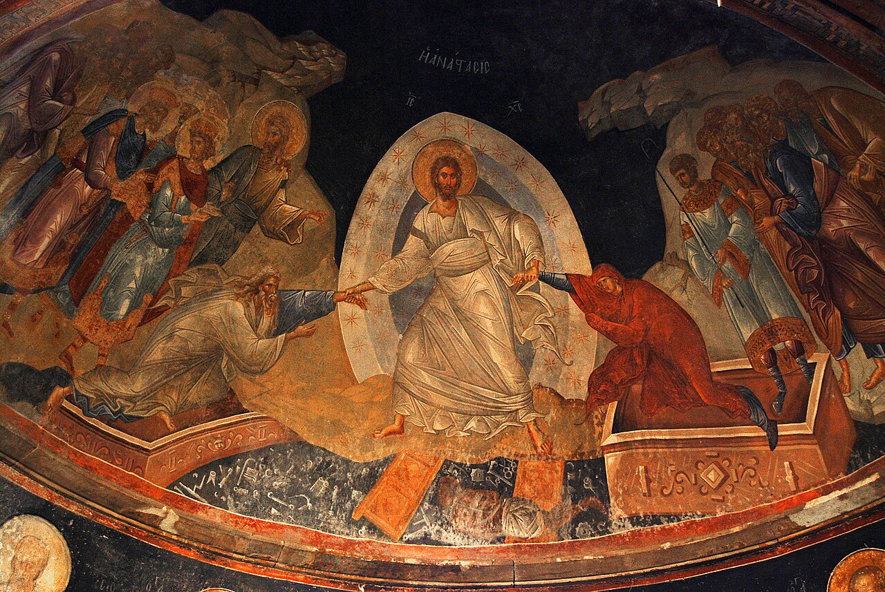
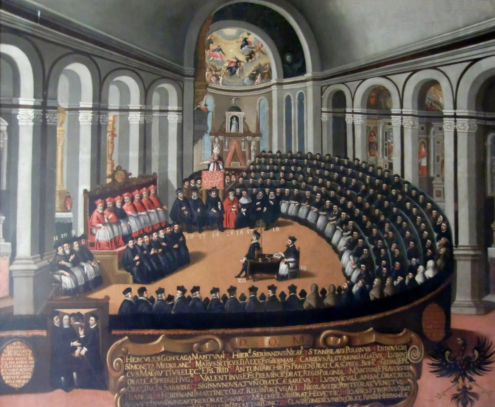

Hay una frase que circula mucho y que suena bien: el pecado original es un invento occidental, y el cristianismo oriental nunca lo tuvo. Lo que tiene el Oriente, se dice, es el «pecado ancestral», que es otra cosa: heredamos la mortalidad, no la culpa.
La distinción es real y es importante. Y su historia es bastante más reciente de lo que la frase sugiere.
Dos vocabularios
El griego dice propatorikḗ hamartía, «pecado del primer padre», o propatorikòn hamártēma. El latín dice peccatum originale. Y sobre esos dos términos se ha construido, en los dos últimos siglos, una de las distinciones más citadas de la teología comparada.
Con una advertencia que hay que hacer de entrada: el uso técnico de propatorikḗ hamartía como contraconcepto deliberado de «pecado original» es en gran medida moderno, sistematizado en la teología ortodoxa de los siglos XIX y XX. No es que los padres griegos acuñaran conscientemente una alternativa; es que teólogos posteriores encontraron en su vocabulario los elementos para formular una. Presentar el término como si fuera una réplica patrística consciente sería adelantar el reloj.
Pero la diferencia sí existe, y es sustantiva
Dicho eso, la diferencia de fondo no es un invento del siglo XX: se puede documentar en los textos antiguos, y afecta a todas las piezas del sistema.
La categoría central de Occidente es el reatus, la culpa entendida como reato jurídico. La de Oriente es la phthorá y el thánatos: corrupción y mortalidad. Lo que se hereda, según Occidente, es culpa más concupiscencia más mortalidad; según Oriente, mortalidad y corrupción, y no culpa personal. El modelo occidental es forense —deuda, imputación, remisión—; el oriental es médico y ontológico —enfermedad, curación, deificación—. Y el recién nacido es, en un caso, reo de una culpa ajena; en el otro, sujeto a la mortalidad y no culpable.
Y hay una diferencia final que es la más elegante de todas, porque es exactamente la que dependía del pronombre de la entrega II: en la causalidad occidental, el pecado produce la muerte y la culpa está en Adán. En la oriental, la muerte produce el pecado: la mortalidad induce a pecar. Es la lectura que el griego permitía y que el género de mors cerró en latín. La divergencia dogmática de mil quinientos años y la ambigüedad gramatical de un relativo son, en este punto, la misma cosa vista desde dos sitios.

Y sin embargo el Oriente no es ajeno al asunto
Ahora la parte incómoda, que es la que hace falta para que el capítulo no sea propaganda de un lado.
El primer dato es de derecho canónico y es contundente: el concilio de Trullo, en 692, ratificó los cánones de Cartago. Todos, incluido el que manda bautizar a los niños a causa del pecado original. Es decir: la Iglesia oriental está formalmente vinculada a los cánones antipelagianos de Cartago. Eso complica gravemente cualquier narración de un Oriente que pasara de largo por la cuestión.
El segundo es de época moderna: las confesiones ortodoxas de 1642 y 1672 usan lenguaje de culpa heredada. No matizado, no en otro registro: lenguaje de culpa heredada.
De donde se sigue una conclusión que hay que sostener con las dos manos, porque incomoda a los dos lados: la antítesis nítida entre «pecado ancestral» y «pecado original» es en gran medida una construcción del siglo XX, sistematizada por teólogos como Romanides y Meyendorff, sobre una diferencia de acento que sí es antigua. Hay una diferencia real; la frontera limpia no lo es.
Anselmo cambia la definición
Mientras tanto, en Occidente, la doctrina no se queda quieta. El paso más importante lo da Anselmo de Canterbury a comienzos del siglo XII, y consiste en redefinir qué es el pecado original: no una mancha positiva que se hereda, sino la privación de la justicia debida. Una ausencia, no una presencia.
El cambio parece técnico y tiene una consecuencia enorme: aligera la carga sexual agustiniana. Si lo que se transmite es una privación, la concupiscencia deja de ser el vehículo necesario, y el sistema puede funcionar sin que el acto de engendrar sea el conducto de la culpa. La escolástica posterior, con Tomás, trabaja sobre esa base.

Trento cita in quo
Y en el siglo XVI ocurre algo que cierra el círculo de esta serie de una manera que ninguna reconstrucción habría podido inventar.
El concilio de Trento define el pecado original. Recoge literalmente la fórmula agustiniana —propagatione, non imitatione, por propagación y no por imitación—. Y en su canon segundo cita Romanos 5:12 con el in quo.
Es decir: la lectura discutida, la que el griego no permite y el siríaco excluye, la que quedó disponible en latín porque mors es femenino, queda incorporada al texto de una definición dogmática. No como argumento accesorio: dentro del canon.

La Reforma, y el problema moderno
La Reforma no discute el pecado original: lo intensifica. Lutero y Calvino desarrollan la doctrina de la depravación total, que lleva la incapacidad de la voluntad caída más lejos de donde la había dejado Agustín. En este punto, y contra lo que suele suponerse, el siglo XVI es más agustiniano que la Edad Media.

Y queda el problema del siglo XX, que es de otro orden. Si el pecado original se transmite desde un primer hombre, la doctrina exige que haya habido un primer hombre: exige el monogenismo. Y la biología evolutiva no describe orígenes así, sino poblaciones.
La dirección de la exigencia conviene precisarla, porque suele contarse al revés. La encíclica Humani generis, en su párrafo 37, no dice que el poligenismo sea científicamente falso: dice que no se ve cómo podría conciliarse con lo que las fuentes enseñan sobre el pecado original. Es la doctrina la que exige el monogenismo, y no al contrario. La distinción no es un detalle: sitúa exactamente dónde está la tensión.
Se hereda culpa, concupiscencia y mortalidad. El recién nacido es reo de una culpa ajena. El pecado produce la muerte, y la culpa está en Adán.
Se heredan mortalidad y corrupción, no culpa personal. El recién nacido está sujeto a la muerte y no es culpable. Y la muerte produce el pecado: la mortalidad induce a pecar.
Ratificó los cánones de Cartago, incluido el del bautismo de niños por el pecado original. El Oriente está formalmente vinculado a ellos.
La antítesis nítida entre pecado ancestral y pecado original la sistematizan Romanides y Meyendorff, sobre una diferencia de acento que sí es antigua.
El arco completo
Seis entregas después, el recorrido se puede decir en una respiración.
En Génesis 3 no hay pecado, ni caída, ni herencia, y después del jardín nadie en la Biblia hebrea vuelve sobre Adán para explicar el mal. El judaísmo del Segundo Templo discutía el asunto con posiciones incompatibles —«Oh Adán, ¿qué has hecho?» frente a «cada uno ha sido el Adán de su propia alma»— y Pablo interviene en ese debate. Su frase clave termina en un pronombre ambiguo dentro de una oración inacabada, y el latín, al verterla literalmente, cierra una de las dos lecturas posibles por el género de una palabra. Mientras eso ocurre, las iglesias llevan siglo y medio bautizando recién nacidos y necesitan explicar de qué. Agustín ensambla las piezas y les pone nombre técnico, dejando expresamente sin resolver el mecanismo. Un concilio africano lo define, un emperador lo respalda, y el bando que pierde nos llega en las comillas del que gana. Anselmo lo redefine como privación, Trento lo fija citando el in quo, la Reforma lo endurece, y el siglo XX descubre que la doctrina necesita una biología que no existe.
Nada de eso es un fraude. Es lo que le pasa a una idea cuando vive mil quinientos años: se apoya en lo que encuentra, resuelve los problemas que le van saliendo y hereda las gramáticas de las lenguas por las que pasa. Que se pueda contar así, con fechas y con nombres, no la desmiente. La hace conocible, que es de lo que va este blog.
La tercera etapa continúa. La idea siguiente es la que hemos estado rozando todo el tiempo sin entrar en ella: qué le pasa a alguien después de muerto, y cómo cuatro concepciones incompatibles acabaron conviviendo en la misma frase.
No ha discutido si el pecado original es verdadero, ni si es una buena doctrina, ni si explica algo del mundo. Son preguntas legítimas, y no son históricas: no se contestan con manuscritos ni con cánones conciliares. Lo que sí se puede contestar con manuscritos es cuándo apareció cada pieza, quién la puso y qué problema resolvía. Y hay una consecuencia de todo esto que conviene no dejar implícita: una doctrina que se construyó puede también reconstruirse. Buena parte de la teología de los últimos ochenta años, católica y ortodoxa y protestante, consiste exactamente en eso. Saber cómo se hizo la primera vez es lo que permite entender la discusión actual.
Es dato firme la diferencia de categorías entre las dos tradiciones: reatus frente a phthorá y thánatos, modelo forense frente a modelo médico-ontológico, y la inversión de la causalidad en Romanos 5:12 —muerte que induce al pecado en la lectura griega—. Lo es que Trullo, en 692, ratificó los cánones de Cartago, y que las confesiones ortodoxas de 1642 y 1672 emplean lenguaje de culpa heredada. Lo es que Anselmo redefine el pecado original como privación de la justicia debida; que Trento recoge propagatione, non imitatione y cita in quo en su canon segundo; y que Humani generis 37 formula el problema del poligenismo precisamente por su dificultad para conciliarse con el pecado original.
Debate abierto: la antigüedad del término griego propatorikḗ hamartía, cuya primera atestiguación no hemos podido establecer. De ella depende cuánto del contraste Oriente-Occidente es patrístico y cuánto es sistematización moderna, así que la formulación de este artículo —diferencia antigua, frontera nítida moderna— es la prudente y no la única posible. Los cánones de Cartago 418 y de Orange 529 se manejan por síntesis y no por texto conciliar numerado. Y la recepción medieval de Anselmo y de Tomás se resume aquí en dos párrafos: es un tramo que merecería una serie propia y que esta no cubre.
Esta serie ha descrito cómo se construyó una doctrina, y conviene decir en su última línea lo que no se sigue de eso. Que una idea tenga historia no la refuta; todas la tienen, incluidas las nuestras. Que se apoyara en un pronombre ambiguo, en una práctica bautismal y en el género de una palabra latina no la convierte en un malentendido: la convierte en humana, que es la única clase de cosa que los historiadores sabemos estudiar. Iluminar el origen de un relato no es desmentirlo. Ha sido el propósito de este blog desde la primera entrega y sigue siéndolo en la última de esta serie.